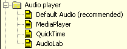
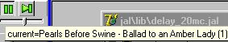
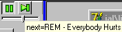
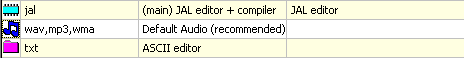
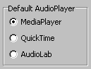

December, 2004
Audio Player
Introduction
JALcc, can play single audiofiles from the document-list, but the document-list can also serve as a automatically playing MP3-playlist. In the presentation mode the audioplayer is available for playing of included audio-files.
The program has interfaces to some standard audioplayers (like MediaPlayer and QuickTime) and has also a buildin audioplayer (AudioLab). For using one of the standard audioplayers, these audioplayers must already be correctly installed on your computer. For using AudioLab, a correct installed directx is required.
|
For each audio file you can choose a different audio player. But it's recommended that you always select the Default Audio application. In this way it's easy to switch all audio playing from one player to another (this is especially useful when you move your settings between different computers). In the general settings, you can attach the Default Audio application to one of the real audio devices. The MP3-playlist always uses the Default Audio application. |
 |
MP3-list playing
Starting and stopping of the MP3-playlist is done by pressing the playbutton.
MP3-playlist not playing
MP3-playlist playing
The volumecontrol below these buttons is connected to the wave-volume control of your audiomixer.
When the MP3-playlist is active, and a song finishes, JALcc searches for the next mp3-file in the document list. If the end of the document-list is reached, it starts searching at the beginning of the document-list. A song can be skipped by pressing the next button.
The start of the MP3-playlist can be moved, by selecting an mp3-file form the document list, and selecting "Start MP3-playlist here" form the RightMouse-menu.
Moving the mousecursor over one of the audiobuttons, will show a hint with the filename of the currently playing song and the next song.
 
If a single song from the document-list is played, the hint of the play button will show the text "selected=' instead of "current="
On closing of the program, the status of the mp3-list is automatically saved.
Playing a single audiofile
When activating a single audiofile from the document-list (by Enter or Shift-Enter), the mp3-list playing is suspended (if it was running) and the selected audiofile is played. After the single file has finished, the mp3-list playing is resumed.
Presentation mode
When going into the presentation mode, the mp3-list playing is suspended (because there can be media clips in the presentation). The media-files used in the presentation are always played with an own instance of the default audio-player
Default associates
Through the menu "Settings / Global Settings" you can set the default associated application(s) for audio-files added to the document-list.
You can add all audio file-extensions in just one line, and as shown here, the recommended default audio player is selected as the first application associate. In general it has not much sense to add an alternative (default) application to audio files.

Default Audio Player
Through the menu "Settings / Global Settings" you can also set what the default AudioPlayer in real is. The selected audioplayer, will always be used for the MP3-list playing.
|
For using MediaPlayer the windows mediaplayer should already be installed on your computer.
For QuickTime, QuickTime should already be installed.
AudioLab requires an already installed directx package. |
 |
Experiences with AudioPlayers
In general no problems are experienced with any of the implemented audioplayer (in contrast to video-players) Even the annoying registration questions of QuickTime will not occure.
|
|
MediaPlayer |
QuickTime |
AudioLab |
|
file with problem |
|
|
|
Future Improvements